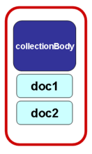
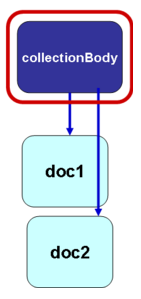
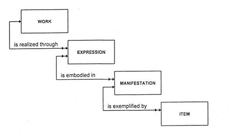
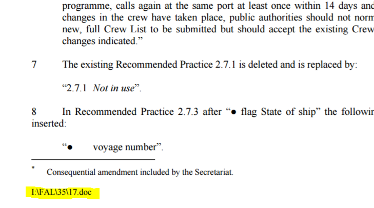
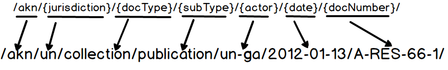

The Akoma Ntoso (AKN) standard was developed to describe, in a machine-readable format, parliamentary, legislative and judicial documents. It was originally developed in the context of the United Nations Department of Economic and Social Affairs initiative to support African Parliaments in adopting ICT to foster transparency and accountability and was later handed over to the OASIS standard body’s LegalDocumentML Technical Committee (LegalDocML), where it is being ratified to become an official standard.
Akoma Ntoso has been designed to take advantage of the common heritage found in all legal systems, while providing enough flexibility to adapt to all the variations of documents, languages and legal traditions.
The Akoma Ntoso standard makes the structural and semantic components of digital parliamentary documents fully accessible to machine-driven processes, thereby supporting the creation of high-quality smart information services and greatly improving efficiency, accountability and transparency of parliamentary activities based on international standards, best practices and guidelines. It is a document-centric standard that preserves the integrity of normative texts and designed to be flexible and support exceptions. It may be extended to address the individual requirements of organizations or specific characteristics of different legal traditions and languages.
Akoma Ntoso provides the UN system with a mature XML standard specifically tuned towards normative and parliamentary documents, whose validity is proven by the growing list of legislatures that are adopting it.
The adoption and the localisation of the Akoma Ntoso standard schema to specific requirements of the UN system of organizations, will enable the UN system to “deliver as one” and “deliver more with less” by supporting the development of value-chain workflows, advanced information services, smart knowledge discovery and effective multichannel dissemination.
Akoma Ntoso Document Model
All Akoma Ntoso documents share the same root element <akomaNtoso>, under which the specific document type is selected. The single root element is meant to better identify the root and separate the namespace and schema declaration (available in the root), and meaningful attributes (available in the document type element).
In the table below we have listed Akoma Ntoso documentTypes by structure to better highlight the function, organization or role that each AKN documentType is intended to address:
AKN Document | Description |
Structure | Types |
Hierarchical | <bill> | <act> | Normative draft (<bill>) and approved documents (<act>) Used to model normative draft and approved documents issued by empowered bodies. They are usually drawn up according to a hierarchical structure in which the text is subdivided into sections or chapters and may be subdivided into clauses or articles, sub-paragraphs, etc. |
Debate | <debate> | Verbatim records of meetings Used to model texts resulting from the transcription of meetings. The structure reflects the different sections of the debates and the questions and answers that may take place during deliberative body proceedings. |
Judgment | <judgment> | Formal decisions in legal proceedings Used to model documents in which a court of law or adjudicating authority makes a formal decision or specific determination following a legal proceeding. The structure reflects the typical narrative of judicial orders. |
Open | <debateReport> | Reports and minutes of meetings Used to model minutes or reports of official meeting, usually of the plenary or committee sessions. The structures are highly variable across organizations and traditions. |
<statement> | Formal expressions of opinion or will Used to model legal documents that may or may not be normative, but are fundamental for the life of an official institution, such as resolutions, decisions or official statements. The body of the document may be modelled to reflect custom structures. |
<doc> | Unstructured documents Used to model documents that do not fit in to any of the other typologies. This is a residual type to accommodate legal and non-legal material that is not covered by any other typology. |
Amendment | <amendment> | Formal instructions for modifications Used to represent formal instructions for modifications to existing normative documents. |
The collection structure is used for all publications that include autonomous documents. To fully understand when collection structures should be used, we need to be aware of the fact that Akoma Ntoso makes a distinction between:
Autonomous documents, which are pre-existing documents, issued by a defined authority that, usually but not always, have their own symbols or identifiers.
Non-autonomous documents, which have functionally distinct contents with their own role and structure but are not autonomous because they have not yet been independently issued by a defined authority.
If a publication contains one or more autonomous documents in its main body, one of the AKN documentTypes listed in the table below must be used. Collection structures may contain any AKN documentType including other collections.
Please note that both autonomous and non-autonomous documents may appear as attachments of any Akoma Ntoso documentType.
Table: Collection Document Types
AKN Document | Description |
Structure | Types |
Collection | <officialGazette> | Official compilations Used to model an issue of an official compilation of an official publication body. |
<amendmentList> | Compilation of amendments Used to model a collection that includes the list of proposals for modifications submitted to official deliberative bodies for discussion. |
<documentCollection> | Collection of independent documents Used to model any document with one or more independent documents. It may be used to model a collections of documents. |
How to model collections
Collections in Akoma Ntoso are containers used to model documents that contain one or more autonomous documents. A “collection” uses the <components> element to include within it any of the AKN document types, or even other document collections. Components may be organised in one of the following ways:
embedded in collectionBody | embedded in documentCollection | only referenced |
logical component(s) are included directly in the <collectionBody> element | logical component(s) are referenced in the <collectionBody> using the element <documentRef> while the autonomous document itself is placed outside the <collectionBody> element within the <components> block | logical component(s) are referenced in the <collectionBody> using the element <documentRef> with attribute @href that specifies the IRI of the independent document/file, which exists independently of the publication document |
documentCollection 
| documentCollection  | documentCollection |
(Images from the official documentation in LegalDocMl OASIS)
It is possible to have some descriptive or introductory sentences between each autonomous document by using the <interstitial> element which may contain text elements and blocks to be placed for any reason between individual documents, for example, <num>, <heading> or <subheading> elements that may be used to qualify arbitrary text between components. The collection also supports attachments via the <attachments> element.
Portion
The AKN <portion> document type does not really correspond to any actual publication. It is not a logical document that a reader may identify. It is used in exceptional cases for technical reasons. For example, some legal documents may become very large, too large to be easily manageable and <portion> is a pure technical split, used to handle very long documents by fragmenting them into “portions” to facilitate legal drafting and document management. The <portion> document type may also be use when you use a service that returns specific parts of an AKN document when queried, when subsets of a document are returned they may be returned within a dynamically created portion document.
It is an implementation decision whether or not to create a <portion>, it is not a mark-up one. From the main document the portion is referred to by using the <component> element and a <documentRef.>.
Table: AKN Portion documentType
AKN Document | Description |
Structure | Types |
Portion | <portion> | Used to model a portion of any document as a pure technical split. |
Document type elements may be qualified using the following attributes:
@name: used to qualify a document type with tradition, organization or jurisdiction-specific terms e.g. <act name=”treaty”> to specify that the document using the <act> element should be referred to as a “treaty”. Please note that <portion> document type does not use the @name attribute; it uses the @includedIn attribute to refer to the master document.
@contains: used to indicate the status of the version the document represents. It may have the following values:
originalVersion: when the content of the document is exactly the one that has been formally and explicitly approved by the relevant authority, with no modifications.
singleVersion: when the content of the document is an editorially modified version of the original document, according to one or more subsequent formal modifications. Individual additions and deletions are not marked in the content.
multipleVersions: when the content of the document is the juxtaposition of fragments belonging to two or more different versions of the same document. Each fragment is marked as belonging to one or more versions of the document.
If this attribute is not used, it is assumed to contain the original version.
The <lifecycle> metadata element is required for all singleVersion and multipleVersion documents, and must be complete. All modifications preceding the document date must be correctly listed and referenced, even if they play no part in the displayed content. originalVersion documents need not have the <lifecycle> element.
In Akoma Ntoso, all document types share the same basic structures and, to a different degree, the same organization of content. With organization of content, we refer here to the visible/explicit structures of a document, its organization in parts and sub-parts that are either in sequence or contained within each other.
Akoma Ntoso supports the basic structures listed in the below. Needless to say that different documentTypes, may use different sets of “basic structures”. Only the namespace, the root element <akomaNtoso>, <{documentType}>, <meta> and <{body}> elements MUST be used (in red below).
<akomaNtoso xmlns="http://docs.oasis-open.org/legaldocml/ns/akn/3.0/WD17".>
<{AKN documentType}>
<meta>...</meta>
<coverPage>...</coverPage>
<preface>...</preface> or <header>...</header>
<preamble>...</preamble>
<{structure specific body element}>...</{body element}>
<conclusions>...</conclusion>
<attachments>...</attachments>
</{AKN document type}>
</akomaNtoso>
As seen in the model document schema above, the seven document types differ mainly in the way the body, which holds the main content of the document, is structured. In the table below we describe the main characteristics of the structure of the “main content” part of the different document types.
<body> for documentType <bill> <act>
The <body> element is used for bills and acts and presents an explicit hierarchy of parts, where each part may be identified with a meaningful name (such as section, tome, etc.) and possibly provided with numbers and various types of headings.
Akoma Ntoso provides a large number of names for these parts (<part>, <chapter>, <section>, <paragraph>, etc.). Some legislative traditions may use names which may not match the part names specified above – for such use cases a generic container called hcontainer (i.e. hierarchical container) is provided which may be identified with a name and supports the same hierarchical structures provided by the named parts.
<debateBody> for documentType <debate>
The <debateBody> element contains a hierarchy of subdivisions at the bottom of which may be specified blocks of text or individual utterances of individuals participating in the debate, as well as comments from the drafters.
Subdivisions are explicitly listed (e.g. <administrationOfOath>, <declarationOfVote>, <communication>, etc.), plus a generic element <debateSection> for all unnamed subdivisions and all those subdivisions whose appropriate name is not listed here.
Within <debateSection>, individual text structures may be marked up with <containers>, <speechGroup>, <question> and others. Containers that refer to actual utterances (i.e. <speech>) have a distinct structure which allows the identification of a speaker using the <from> element (which is the name of the speaker as displayed on the print version of the document) plus references to individuals and roles.
<judgmentBody> for documentType <judgment>
The <judgmentBody> element contains sections (e.g. <introduction>, <motivation> etc.), that may to be present one or more times as needed.
<mainBody> for documentType: <statement> <debateReport> and <doc>
The <mainBody> element of an open structure is a generic collector of all preceding structural elements in any order and number. It is meant for marking up those document types whose structure is too varied, or not well standardized, or with too many exceptions to be worth describing explicitly. It supports the subdivisions provided by <debateBody> (see above).
<collectionBody> for documentType used in collection structures
The <collectionBody> element is used for including multiple documents that maintain their autonomy, but may be managed as a unique container. It is used by the documentTypes <documentCollection>, <officialGazette> and <amendmentList>.
This structure permits two different approaches:
to include directly in the collectionBody element the other documents (bill, doc, debate, act, etc.);
to include in the collectionBody element references to the documents using the element <documentRef>.
<amendmentBody> for documentType <amendment>
The <amendmentBody> element includes the body of the amendment that is composed of several important parts: amendmentHeading, amendmentContent, amendmentReference, and amendmentJustification.
<portionBody> for documentType <portion>
The <portionBody> element permits including a portion of any other document.
Metadata is composed of information that is not in the original visible content of the document, but has been added to improve the comprehension and classification of the content in the document.
Metadata Schema
AKN provides the <meta> block which is used to contain metadata for the document, and within this, nine different container elements have been provided, each one to describe a different aspect of metadata:
<identification>: containing all relevant facts about the document, dates and authors.
<publication>: publication metadata.
<classification>: keywords classification.
<lifecycle>: events that modify the document.
<workflow>: events that are involved with the legislative, judiciary or parliament process.
<analysis>: qualifications of the provisions and assertions on the text.
<temporalData>: temporal parameters (e.g. time intervals of entry into force and enforceability period).
<references>: external resources connected with the document, as well as of all individuals, organizations, and concepts that are relevant to understanding the content and the history of the document.
<notes>: annotations inserted by the editor or by the author to explain and detail the text content of the document.
<proprietary>: local and proprietary metadata.
<presentation>: typographical information useful to support the rendering of the document.
For a detailed analysis of all metadata blocks, please see the AKN4UN Metadata section.
Akoma Ntoso metadata relates facts and statements about the document and its content to concepts, things, individuals, and organizations that are mentioned within, but not necessarily stored within, the document being marked up.
For instance, the identification of a specific individual acting as a “Delegate” in an “Assembly” requires uniquely specifying the “name of the individual”, and also reliably associating the meeting to that specific individual (as opposed to any other individual who might have the same name). This is done using ontologies that allow enriching documents, not just with metadata, but also with information that refers to clear, unambiguous and verifiable concepts.
In Akoma Ntoso metadata, values are labelled and collected according to a common ontology, i.e. an organized description of the metadata categories that describe the resources. A shared ontology is fundamental to provide a way for managing, organizing and comparing metadata.
Akoma Ntoso ontology is concerned particularly with records and document management, and covers the core set of data elements needed for the effective management and retrieval of official documents and information. The scope of the ontology is to provide a universal schema for all the information about a document that is available to its owner, does not belong to the document itself, and might be needed for management or searching.
The format supported by the schema is loose and extensible so that institutions and organizations with different, or more specific metadata needs may add additional elements and qualifiers to meet their own requirements and be easily converted into ontology formats like OWL or RDF. This is a conscious design choice keeping in mind the longer term and the likely evolution of semantic ontology formats in the future.
The Akoma Ntoso ontology is centred on the concept of document, which is considered in a very precise way through the specification of the Functional Requirements for Bibliographic Records (FRBR) standard of the International Federation of Library Associations (IFLA).
The Akoma Ntoso ontology structure is divided in two main categories:
document classes: focused on all entities that represent the different aspects of a document as intellectual creation, the forms (versions, translations, etc.) that it may take and its physical embodiment (e.g. PDF, XML, HTML, paper, etc.).
non-document classes: focused on two different aspects, namely who is responsible for the production of the content (e.g. organization, person, etc. and what the content is about e.g. concept, object, event, locations, roles, procedures, etc.)
For the document classes, Akoma Ntoso has defined a set of prescriptive / canonical classes and sub-classes modelled on the FRBR conceptualization of documents.
For non-document classes because of the vast diversity of legal, parliamentary and judicial documents Akoma Ntoso only defines the concept of Top Level Classes (TLC).
See in the Table below, the list of both the prescriptive document entity classes and the non-document classes.
Table: Document and Non-Document Classes
| Akoma Ntoso Top Level Classes |
Document Classes (Canonical) | Work |
Expression |
Manifestation |
Item |
Non-Document Classes (Top Level Classes) | Person |
Organization |
Concept |
Object |
Event |
Location |
Process |
Term |
Role |
Reference |
Document Classes
Akoma Ntoso adopts the FRBR model because it offers an excellent framework to deal with legal texts, where there are a lot of derivations due to the constant amendments of normative acts, where documents may be translated into different languages or annotated in different ways.
The FRBR model identifies four different levels of abstractions about documents that are clearly differentiated: “works”, “expressions”, ‘manifestations” and “items”. These four Top Level classes are typically connected to a document, and are expressed via their elements: <FRBRWork>, <FRBRExpression>, <FRBRManifestation>, <FRBRItem> which are present in the <identification> element in the <meta> block.
The relationships depicted in the diagram below (Relationship between Work, Expression, Manifestation & Item) indicate that a work (e.g. a Resolution) may be realized through one or more expressions e.g. in English and French (hence the double arrow).
An “expression”, on the other hand, is the realization of one and only one “work” (hence the single arrow). i.e. both English and French versions are "expression" of the Resolution "work".
An “expression” may be embodied in one or more than one “manifestation” – i.e. the English and French Resolutions that constitute "expression" may be published in PDF or in XML format – each of which is a “manifestation”.
A “manifestation”, in turn, may be exemplified by one or more items – i.e. a printed copy of a resolution in the library, a PDF copy of the English resolution stored in my computer.
Table: How FRBR classes relate to documents
FRBR Class | Legal Document |
work Deals with concept : the abstract concept of the legal resource | “Treaty on Exploitation of Space” approved in 2000 |
expression Deals with form: any version of the “work” whose content is different from others for any reason: language, versions, etc. | “Treaty on Exploitation of Space" 2000 in English “Treaty on Exploitation of Space" as amended in 2006 in Spanish; |
manifestation Deals with format: any electronic or physical format of the “expression” (MS Word, Open Office, XML, TIFF, PDF, etc.} | Treaty_Space_2006.pdf Treaty_ Space_2009.xml |
Item Deals with location: the physical copy of any manifestation in the form of a file stored somewhere. | Treaty_Space_2006.pdf in your PC Treaty_Space_2009.xml in the library server |
These FRBR level elements are closely related to the way documents are named and identified in Akoma Ntoso. The metadata specified via the document classes is used to compose the identification IRIs which form the basis of the Akoma Ntoso Naming Convention.
Non-document Classes
Non-document classes are entities that do not describe the document itself (unlike Work, Expression, Manifestation or Item), but instead describe the content of the document via ontologies.
The ontological structure is based on a concept called Top Level Class (TLC). This ontological structure does not impose any particular rules, unlike that of the document classes. There is no predefined ontology, nor is there a defined relationship between these classes. The only thing implied are a set of guidelines to allow modellers and drafters of documents to develop their own ontology according to their needs.
Akoma Ntoso provides ten different TLCs to identify the different entities present in a document. Even though these TLCs are labelled with names, and imply a particular IRI structure – the name does not imply a formal semantic. Akoma Ntoso does not define ontology classes for any TLC label, only a naming convention based on IRIs is suggested to express that particular class. The implication is that the actual ontology itself is defined separately in an appropriate language or form, and the TLC IRIs are just mapped to them.
This design aspect of Akoma Ntoso ontology structures allows a great deal of flexibility in what may be expressed within the metadata of Akoma Ntoso documents. By leaving it up to the drafter or modeller to associate clear and formal semantics to each class using any formal ontology representation, it allows the Akoma Ntoso documents themselves to be readable and understandable well into the future as formal ontology descriptions and forms will likely evolve and change over time.
Below you may find a brief description of Akoma Ntoso TLCs for non-document entities used to provide further meaning to the non-document classes of the ontology.
Table: TLC Non Document Classes
<TLCPerson> | Used to identify persons mentioned in a document. |
<TLCOrganizations> | Used to identify organizations or groups of individuals that are used or referred in a document. |
<TLCConcept> | Used to identify abstract notions or ideas present in a document. |
<TLCObject> | Used to identify material things mentioned in a document. |
<TLCEvent> | Used to identify actions or occurrences mentioned in a document. |
<TLCLocation> | Used to identify places mentioned in a document. |
<TLCProcess> | Used to identify processes, series of actions or steps taken in a document or mentioned by a document in order to achieve a particular end. |
<TLCRole> | Used to identify roles, functions assumed by a person or thing in a particular situation mentioned in a document. |
<TLCTerm> | Used to identify terms or phrases used to describe a thing or to express a concept in a document. |
<TLCReference> | Used to associate references to Ontological Classes or External IRIs. |
Each of these elements use the following attributes:
@eId (required): used to identify the TLC element uniquely within the document. This identifier is used to connect the content to the ontology class.
@href (required): used to uniquely identify the entity using an Ontology IRI. Note that these are almost always conceptual IRIs (except sometimes in the case of TLCReference where they may be actual URLs) which have a pure identification function.
@showAs (required): to be used for descriptive name of the entity in the ontology to appear as a label in listings or in other display forms.
@shortForm (optional): to be used to provide a shorter alternative name for the entity in the ontology.
For a detailed analysis of all non-document classes please see the AKN4UN Naming Convention section.
Akoma Ntoso Naming Convention
Official documents, resolutions, treaties, conventions, etc. contain numerous references to other official documents, people, organizations, concepts, places, events, etc. These documents and the items they refer to may reside on different computers and systems, and even on entirely different networks. The AKN4UN naming convention based on the Akoma Ntoso Naming Convention is a standard mechanism for creating identifiers of documents that may be used to access content and related metadata regardless of storage options and architecture.

Figure: UN Document, with storage dependency (I: drive and path) in naming and identification
Electronic documents are typically stored on networked computers, and accessed by specifying their network addresses. However, these addresses are extremely dependent on the specificities of the architecture that were adopted by the owner of those documents, and are dependent on the technologies and tools used by the owner.
Since UN documents have legal and historical value, it is important that they are not dependent, and not named according to the physical address of the document in the form and medium that is currently used to access it (see Figure above). The long term availability of these documents needs to be guaranteed.
Akoma Ntoso specifies a naming convention which, in combination with the AKN schema for documents, may be used to identify, reference and access not only the document, but its internal structural parts, and its logical components. Specific portions of a document may also be addressed in a similar manner.
The AKN naming convention is independent of the network address for all the structures represented using it. Akoma Ntoso uses Internationalized Resource Identifiers (IRI) in its naming convention, which provide a clear differentiation between how we name the document, and the identifiers that physically represent the document being requested. IRIs are also the standard mechanisms for referring to documents, languages and concepts on the internet.
Unlike standard internet URLs, which are only about referencing other documents or items on the internet, the AKN naming convention when used with the AKN schema provides a much broader functionality.
The AKN naming convention:
Allows naming not just the document, but also all the constituent parts of a document– If you think of a typical UN document, it is made up of parts that the user may clearly identify and name – the cover page, the preface, the preamble, the sections with numbers and headings, the content within the sections (e.g. numbered paragraphs with headings), and so on. There may also be annexes and attachments as part of a document (components). The naming convention allows identifying and naming each and every constituent part of a document. It is also aware of the structural hierarchy of a document, so just by examining the identifier you may exactly know where the part being referenced is in the document.
Provides names that convey meaning – Unlike internet URLs, which do not convey any specific meaning, other than what the creator of the URL had in mind, AKN IRIs convey a very clear and distinct meaning about the type of document, its place of origin, its date of origin, its author, the specific part of the document being referenced and so on, in a structured and predictable manner.
Allows ways to include a document or a part of document within another document – Typically UN documents are used in different contexts, they may be placed inside other publications, or perhaps as an annex to a report. The AKN naming convention allows referencing other documents within a document such that the content of the referenced document becomes part of the referencing document. This greatly reduces duplication of documents.
Internationalized Resource Identifiers (IRIs)
The AKN naming convention has been modelled on the following principles:
meaningfulness: the name is a meaningful and logical description of the resource and not of its physical path.
permanence: the name must be permanent and stable over time.
invariance: the name must derive from unchanging properties of the resource so as to provide some degree of certainty in obtaining the same name for the same resource regardless of process, tool and person.
Akoma Ntoso uses Internationalized Resource Identifiers (IRIs) as standard mechanisms for referring to documents, languages and concepts on the World Wide Web. A good IRI also has an identification purpose, i.e. it provides a way to universally refer to that resource in a manner that does not change with time, computer systems or software versions. Akoma Ntoso gives a lot of importance to IRIs, and provides rules to systematically specify IRIs for all documents, concepts of the ontology, and even for the markup language itself.
Absolute and relative IRIs
References at all levels are divided into absolute IRI and relative IRI references. The Akoma Ntoso IRIs belong to the http:// scheme and are expected to be normally resolved using mechanisms widely available in browsers and web servers. Within documents, IRIs are used as references to addressable resources, and are thus called IRI references.
An absolute IRI starts with the string “http://”, which is then followed by an officially registered domain name, and the local part that starts off the first individual “/” character. A relative reference (which is how references are used in AKN documents), on the other hand, has no indication of the scheme, no indication of the domain name, and may have further missing parts at the beginning of the whole string (no missing parts on the end, though). This makes all IRIs independent of the actual resolution mechanism, and allows for very flexible storage, access, and reference mechanisms. This means that all resolution mechanisms used to access an Akoma Ntoso document from another Akoma Ntoso document will rely on the same resolution mechanism as the original one, regardless of the resolution mechanism employed to generate the documents themselves.
Global and local IRIs
Yet another distinction within relative IRI references is between global and local IRI references. A global IRI reference is a relative IRI reference where all parts are present except for protocol and authority (i.e. domain name). Thus, a global IRI reference always starts with a slash, to indicate that all other parts are explicitly specified. A local IRI reference, on the other hand, may have one or more parts missing (necessarily from left to right), and the corresponding global (and, subsequently, absolute) IRI reference is determined by adding the corresponding parts taken from the base document, as usual with relative IRI references with missing parts.
In XML manifestations of Akoma Ntoso documents, all Work, Expression, and Manifestation-level references to whole documents must be global, and all references to individual components within the same level (or lower levels) must be local and are stored simply as the name of the corresponding component.
The Akoma Ntoso naming convention:
Does not assume that the document is stored in Akoma Ntoso XML, but only that there is a mapping between the FRBR IRI reference and the URL of a file stored somewhere on the Internet, and to which our reference may be resolved into.
Does not rely on the existence of a single storage architecture, since the IRIs stored within documents are differentiated from the ones physically representing the resource being sought. The mapping from architecture-independent IRIs into accessible architecture-dependent URLs (representing the best Item for the document being sought) is realized through specific applications called IRI resolvers. For more information see below the “How to Resolve IRIs” section.
Document IRIs
All resources are identified by a unique name in Akoma Ntoso. Resources are categorized as Work, Expression, Manifestation and Item, and each of these categories has a different naming structure as well as a number of referenceable concepts that are used in many situations in the lifecycle of legal documents.
The most important concepts of the Akoma Ntoso ontology are related to documents. All discourses and all descriptions of legal sources may be characterized as referring to one of the four levels of a document as introduced by IFLA Functional Requirements for Bibliographic Records (FRBR):
Work – the abstract concept of the legal resource (e.g. “Clean and Safe Water Treaty” 3rd Oct of 2015).
Expression - any version of the Work whose content is specified and different from others for any reason: language, versions, etc. (e.g. “Clean and Safe Water Treaty” as in the version following the amendments entered into force on July 3rd, 2016).
Manifestation - any electronic or physical format of the Expression: MS Word, Open Office, XML, TIFF, PDF, etc. (e.g. PDF representation of “Clean and Safe Water Treaty” as in the version following the amendments entered into force on July 3rd, 2016).
Item – the physical copy of any Manifestation in the form of a file stored somewhere in some computer on the network or disconnected (e.g. the file called ClearnWater2015.pdf on your computer containing a PDF representation of “Clean and Safe Water Treaty” as in the version following the amendments entered into force on July 3rd, 2016).
All documents at all levels may be composed of sub-elements that, when combined, form the whole document. These are called components and abstractly represent the notion that several independent subdocuments form the whole document as it appears to the reader (i.e. a main body possibly followed by a number of attachments such as schedules and tables):
WorkComponents (e.g. main, schedule, annexes, table) - The WorkComponents are abstract entities that may be referenced to refer to different ExpressionComponents in time.
ExpressionComponent (e.g. main, schedule, annexes, or table.) - The ExpressionComponents represent the visible division of the document as generated by the content author (e.g. Parliament) for a specific Expression of the Work.
ManifestationComponent (e.g. xml files, PDF files, or TIFF images.) - The ManifestationComponents represent the division of the document as generated by the Manifestation author (e.g. the XML editor) for a specific Manifestation of a specific Expression.
ItemComponent - The actual files corresponding to the ManifestationComponents.
Non-Document IRI
Akoma Ntoso defines the concept of Top Level Classes (TLC), also modelled on the FRBR ontology that includes but they are not limited to: Person, Organization, Concept, Object, Event, Process, Role, Term and Location. AKN allows other classes to created and does not have other constraint on how the TLC classes may be subclassed provided that each instance has an ID string that is guaranteed to be unique within the TLC.
IRI Identifiers for Documents
As we have seen, the FRBR model is used in Akoma Ntoso for both the naming convention and the conceptual structure of identification of documents (work, expression and manifestation).
Work IRI
The IRI for the Work consists of the following pieces, separated by forward slashes “/”:
/akn: prefix to allow the identification of the IRI as belonging to the Akoma Ntoso Naming Convention (required).
Jurisdiction/country: (a two-letter or code according to ISO 3166-1 or a short and unique alphanumeric code according to ISO 3166-2 ) (required).
Document type: (required).
Document subtype: (if appropriate)
Emanating actor/author: (optional).
Document date: when the document was originally created (required).
Disambiguating feature: number or title of the Work, when appropriate, otherwise optionally the string nn. (if appropriate).
Component and fragment: specifications (if any).
Please note that the IRI is case sensitive, please see an example below (items required in red):
/akn/{jurisdiction}/{docType}/{subType}/{actor}/{docDate}/{docNumber}
e.g. -- /akn/un/collection/publication/un-ga/2012-01-13/A-RES-66-1
United Nations General Assembly publication A/RES/66/1 of 13th January 2012
Figure: Work IRI constituents

For a detailed analysis of Work IRI, please see the AKN4UN Naming Convention relevant section.
Expression IRI
The Expression goes beyond the conceptual idea of a document, and describes the specific identification of the features of the content. This includes specifications of the version and the language of the Expression. Different versions of the same Work, or the same version of the same Work expressed in different languages correspond to different Expressions and will have different IRIs.
The IRI for the Expression as a whole consists of the following pieces:
The IRI of the corresponding Work
The character “/”(required)
The language code in which the Expression is drafted (a three-letter code according to ISO 639-2 alpha-3). (required)
The “@” character (required)
Zero or more semicolon-separated version identifiers, usually a date or the version number if one exists, or any other disambiguating string that helps identifying the specific version of the document (optional).
Any content-specification date (as opposed to validity date) (optional).
Any content authoring information to determine the authoriality of the text content (optional).
Please see an example below (items required in red):
[work IRI]/{lang}@{date}
[work IRI = /akn/un/collection/publication/un-ga/2012-01-13/A-RES-66-1]
[expression part IRI = /eng@2013-12-12]
The IRI expression of the whole document is as follows:
/akn/un/collection/publication/un-ga/2012-01-13/A-RES-66-1/eng@2013-12-12
United Nations General Assembly publication A/RES/66/1 of 13th January 2012, version as of 12 December 2013.
For a detailed analysis of Expression IRI, please see the AKN4UN Naming Convention relevant section.
Manifestation IRI
The Manifestation describes the process that generates an electronic document in a specific format. Different Manifestations of the same Expression generated in different data formats will have different IRI references.
The IRI for the Manifestation as a whole consists of the following pieces:
The IRI of the corresponding Expression as a whole
The mark-up authoring information (useful to determine the authoritativeness of the mark-up and metadata) (optional).
Any relevant mark-up-specific date (optional).
Any additional mark-up-related annotation (e.g. the existence of multiple versions or of annotations.) (optional)
The character “.” (required)
A unique three or four letter extension signifying the data format in which the Manifestation is drafted (required). For instance, such extension may be “pdf” for PDF, “docx”, “html” or “xml” for an XML Manifestation, or “akn” for the zip package of all documents including XML versions of the main document(s) according to the Akoma Ntoso vocabulary.
Please see an example below (items required in red):
[expression IRI]/.{format}
[manifestation part IRI= /.xml]
The IRI of the Manifestation of the whole document is as follows:
/akn/un/collection/publication/un-ga/2012-01-13/A-RES-66-1/eng@2013-12-12/{file name}.xml
United Nations General Assembly publication A/RES/66/1 of 13th January 2012, version as of 12 December 2013 in XML format.
For a detailed analysis of the Manifestation IRI please see the AKN4UN Naming Convention relevant section.
Structural Components IRI
Referring to destinations within the document is possible by adding to a whole-document reference an additional item pointing to the specific destination. Some documents are made of many components; some are only composed of a main document. Within each component, structured portions may be localised and referred to by means of identifying information. Legal citations often point to a specific part of the abstract document, as in “Article 3 of Clear Air Treaty”.
In order to explicitly refer to individual components and portions, it is necessary to introduce a naming convention that identifies them, and allows an easy connection between the component and the document it belongs to.
Components and portions are specified at the end of the IRI for Work-level and Expression-level references, and just before the data format for Manifestation-level references. They are introduced by a special character to separate the parts of the IRI reference identifying the document as a whole from the parts identifying the component and/or portion.
A Work/Expression-level IRI reference including a component specification consists of the following pieces:
The IRI of the corresponding Work/Expression as a whole
The character “/”
The character “!” and
Either:
The name “main” if the component is the only component or the main component in a hierarchy
or
A unique name for the attachment, optionally followed by the number associated to this component in the document. If this number is provided, it is separated from the name with “_”.
For a detailed analysis of Components IRI please see the AKN4UN Naming Convention relevant section.
The idea behind using IRIs as identifiers is to make them independent of underlying storage architecture. Many existing document management systems rely on proprietary identifiers to link documents; these linkages are not portable and depend on the existence of the document management system to be able to resolve documents, and moving documents into a new system implies redoing the references between documents into the format expected by the new storage system.
For example, if you had a document stored in a document management system and published documents via the system, all the instances where you refer to the document would have the proprietary path provided by the document management system on which it was published. If for some reason you migrated to a different document management system, all your existing references would perhaps stop working because they expected a path in the format provided by the previous document management system.
The dependencies for document resolution in these systems may be boiled down to a combination of a specific protocol, a specific service and a proprietary identifier.
So far IRIs have been discussed as identifiers and references. To function as references, IRIs need to be resolved, that is, to be able to predictably access or retrieve the document. The AKN naming convention aims to deal with this issue by recommending the use of a base authority URL to resolve IRIs. In simple terms, the base authority URL is just an HTTP URL prefixed to an IRI.
For example, the below could be a URL to resolve to the main component in Resolution 71/4
Figure: Resolver service and IRI
The above URL is composed of two parts; the first part (http://resolver.akna4un.org) is the hypothetical resolver service where the resolver service is hosted, while the second part is the AKN Work IRI of the main component. The resolver service is a combination of a domain and a protocol.
The function of the Resolver service is to take the IRI part of the incoming request, and retrieve the Akoma Ntoso document being requested from either the internal management system or the database or filesystem in which the document is being stored. Akoma Ntoso documents make references to other documents only via IRIs; there is no protocol or service specified, neither is the protocol or service information recorded in AKN documents. Resolving an IRI in a document is not a function of the document, but the function of an external service.
Please note that AKN only implies the use of a resolver mechanism, and does not provide the specification for one. This is because the implementation of the resolver is dependent on the storage architecture on which the Akoma Ntoso documents reside. The transparent IRI addressing mechanism provides portability of references to documents, and insulates the documents from changes to the storage architecture. In this way, even if the storage architecture changes over the years, the references to documents will not break.
A resolver will of course need to be compliant with the Akoma-Ntoso naming convention and exhibit the behaviours of reference resolution as described in the Using IRI References section (see Using IRI References section). Using Akoma-Ntoso effectively in your organization will necessitate having a resolver.
NOTE: Base Authority URLs and IRIs. It is important to note that Base Authority URLs are never included in IRI references, and must not be included. The base authority URL only specifies a transient service / application that represents an application that resolves an IRI, and because the nature of the service or the address with which it is accessed could change over time, they are not included in the documents as part of the IRI and are meant to be part of the application layer that interacts with AKN documents.
The non-document entities (e.g. people, organizations, or concepts) are always associated to a Top Level Class (TLC), providing a structure of properties and relationships to other instances of the same and other classes. Classes in the Akoma Ntoso ontology are organized in sub/superclasses. These are useful to give shape and meaning to a domain, and to provide structure to the overall set of instances of a base class (e.g. organizations).
In order to maintain meaningfulness, permanence and invariance (which are the main requirements for any naming convention) there is a need to find a reliable naming mechanism for clearly identifying entities that do not depend on the sub/superclass organization except when strictly necessary.
The concept of Top Level Classes are guaranteed to be a partition of the overall domain of the Akoma Ntoso standard. TLC of non-document classes include Person, Organization, Concept, Object, Event, Process, Role, Term and Location. The list of TLC may, in the future, include more, as long as they keep on generating a partition (i.e. they are disjoint and cumulatively describe all possible instance of the Akoma Ntoso domain). Members of the TLC classes may be subclassed at will and with no theoretical constraints.
The only requirement stated by Akoma Ntoso deals with the necessity that any instance of each TLC is provided with an ID string that is guaranteed to be unique within the TLC. The syntax of this ID is dependent on the TLC class.
For a detailed analysis of non-document classes IRI, please see the AKN4UN Naming Convention relevant section.
Identifiers allow identifying parts/sections within documents, and also, if necessary, fragments of text. Identifiers are essentially a way to uniquely name and identify parts of a document.
It is important to be able to identify each part within a UN document uniquely so that there may be a robust means of referring to that provision. In general, there are three important ways in which you will need to refer to and track a provision:
To be able to track a part of a document throughout its lifecycle, knowing with certainty that you're referring to the same part despite any moves or renumbering that it might experience. In essence, it is necessary to have an immutable identification ― a means of identifying a part that will never change.
To be able to refer to each version of a part, since documents change over time, knowing with certainty, that the text you have retrieved is exactly the text as it was when it was referred to.
To be able to refer to the current version of a provision as it changes over time, retrieving the latest text at the time it is accessed.
Akoma Ntoso provides three identifiers which may be used to address these needs:
@eId is the expression identifier. It is a user-meaningful token generated using a combination of hierarchical location in the document, document type, and document number as needed to ensure (some degree of) uniqueness. The @eId of a provision may change multiple times throughout the life of the document – it is non-persistent.
@wId is the optional work identifier. It uses the same syntactic convention as the @eId value. It is only assigned a value once the @eId changes, inheriting the original value, and will never change once assigned – it is persistent.
@GUID is an optional identifier assigned as a globally unique identifier (GUID) ― a set of randomly generated alphanumeric values. Note that even though it is called GUID it does not necessarily imply only the use of a conventional GUID. It may be used for setting identification schemes which may be prevalent in your organization, or any legacy identification in use. Unlike with @eId or @wId, there is no syntax recommended for @GUID.
For a detailed analysis of element identifiers, please see the AKN4UN Naming Convention relevant section.